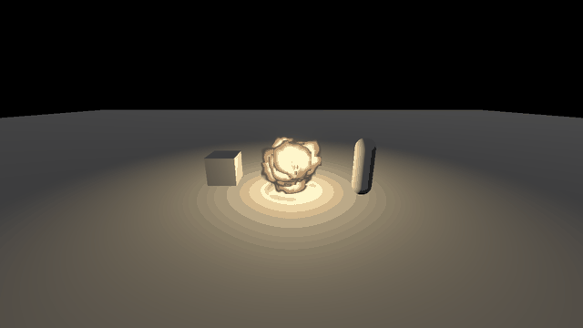
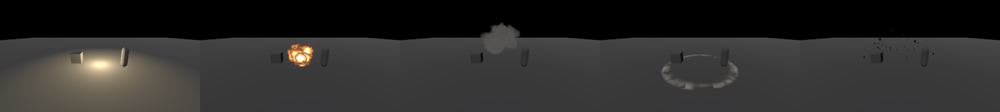
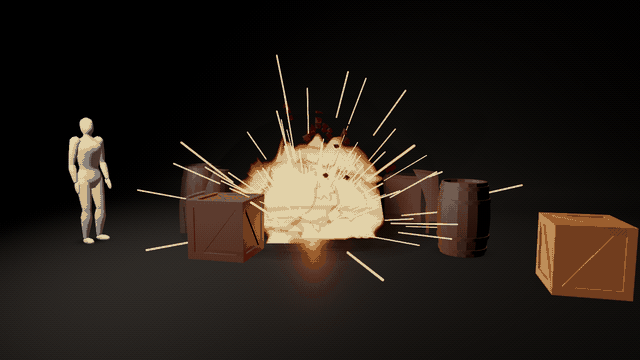

How to make an explosion effect in Godot 4
Short version: an explosion is five layers that start at the same moment and end at different times. A flash of light that is gone in a tenth of a second, a fireball that burns from white to soot in under a second, smoke that keeps rising for three, a ring of dust pushed over the floor, and debris that falls back down. Each layer on its own looks like nothing much. It's the timing between them that makes it read as a blast. Below is all of it in one script and three short shaders, then how to change it for other kinds of explosion, and where this approach runs out. The pack I sell is at the end.

The five layers

| Layer | Time | What it does |
|---|---|---|
| Flash | 0.08 s | An OmniLight3D at high energy that drops to 0. It lights the floor and the props around the blast for a few frames, which sells the size more than the fireball does. |
| Fireball | 0.9 s | 18 camera-facing puffs flying out in every direction. Each puff is a noisy blob with a hot middle, and it burns away from the edge as it ages, white to yellow to orange to soot. |
| Smoke | starts at 0.12 s, lasts 2.8 s | Dark puffs that start a little after the fire, rise slowly, keep growing and thin out. Starting them late leaves the fireball alone in the first frames. |
| Dust ring | 0.6 s, 4.0 m | A flat plane on the floor with a broken band of dust that races out fast and slows down. Without it the blast floats above the ground. |
| Debris | 1.3 s | Small dark boxes thrown up and out with gravity. They are what is still moving after the fire is gone. |
The code
Make a folder with these four files, add a Node3D to a scene, attach explosion.gd and run it. With autoplay on it goes off every two seconds. Call explode() from your own code to set one off, and explode("smoke") plays one layer, which is how the strip above was made. There are no textures: every soft shape is noise computed in the shader. I ran it on Godot 4.4.1 and 4.7.2 on Forward+, Mobile and Compatibility, and all six logs had zero errors and zero warnings. Turn on glow in your WorldEnvironment. The middle of the fireball is drawn brighter than 1 so that it blooms.
explosion.gd
extends Node3D
# One explosion = five layers, in order of appearance. All times in seconds.
const FLASH_TIME := 0.08 # 1 white light, gone almost at once
const FIREBALL_LIFE := 0.9 # 2 fireball: white > yellow > orange > dark red
const SMOKE_DELAY := 0.12 # 3 smoke starts after the fireball
const SMOKE_LIFE := 2.8
const RING_TIME := 0.6 # 4 shock ring on the floor
const RING_RADIUS := 4.0
const DEBRIS_LIFE := 1.3 # 5 debris, falls with gravity
const AUTOPLAY_INTERVAL := 2.0
@export var autoplay := true
var _fire_mat: ShaderMaterial
var _smoke_mat: ShaderMaterial
var _debris_mat := StandardMaterial3D.new()
func _ready() -> void:
_fire_mat = ShaderMaterial.new()
_fire_mat.shader = load("res://fireball.gdshader")
_smoke_mat = ShaderMaterial.new()
_smoke_mat.shader = load("res://smoke.gdshader")
_debris_mat.albedo_color = Color(0.12, 0.11, 0.1)
if autoplay:
var t := Timer.new()
t.wait_time = AUTOPLAY_INTERVAL
t.autostart = true
t.timeout.connect(explode)
add_child(t)
explode()
# only = "" plays everything; "flash", "fireball", "smoke", "ring", "debris" play one layer.
func explode(only := "") -> void:
if only == "" or only == "flash": _flash()
if only == "" or only == "fireball":
_burst(_quad(), _fire_mat, 18, FIREBALL_LIFE, 0.0, 1.0, 2.6, 180.0, 0.6, 0.5, 1.4, 2.4)
if only == "" or only == "smoke":
_burst(_quad(), _smoke_mat, 22, SMOKE_LIFE, SMOKE_DELAY, 0.6, 1.6, 45.0, 0.5, 0.7, 1.4, 2.4)
if only == "" or only == "ring": _ring()
if only == "" or only == "debris":
_burst(BoxMesh.new(), _debris_mat, 28, DEBRIS_LIFE, 0.0, 5.0, 9.0, 55.0, -9.8, 0.2, 0.04, 0.1)
func _quad() -> QuadMesh:
var q := QuadMesh.new()
q.size = Vector2.ONE
return q
func _flash() -> void:
var l := OmniLight3D.new()
l.light_color = Color(1.0, 0.9, 0.7)
l.light_energy = 25.0
l.omni_range = 9.0
l.position.y = 1.0
add_child(l)
var tw := create_tween()
tw.tween_property(l, "light_energy", 0.0, FLASH_TIME)
tw.tween_callback(l.queue_free)
# Spawns a one-shot GPUParticles3D, frees it when done (so bursts can overlap).
func _burst(mesh: Mesh, mat: Material, n: int, life: float, delay: float, v_min: float, v_max: float,
spread: float, gravity_y: float, radius: float, s_min: float, s_max: float) -> void:
var pm := ParticleProcessMaterial.new()
pm.emission_shape = ParticleProcessMaterial.EMISSION_SHAPE_SPHERE
pm.emission_sphere_radius = radius
pm.direction = Vector3.UP
pm.spread = spread
pm.initial_velocity_min = v_min
pm.initial_velocity_max = v_max
pm.gravity = Vector3(0, gravity_y, 0)
pm.scale_min = s_min
pm.scale_max = s_max
mesh.material = mat
var p := GPUParticles3D.new()
p.amount = n
p.lifetime = life
p.one_shot = true
p.explosiveness = 1.0
p.process_material = pm
p.draw_pass_1 = mesh
p.visibility_aabb = AABB(Vector3(-8, -2, -8), Vector3(16, 12, 16))
p.emitting = false
p.position.y = 0.5 + radius # keep the quads above the floor
add_child(p)
if delay > 0.0:
await get_tree().create_timer(delay).timeout
p.emitting = true
get_tree().create_timer(delay + life + 0.3).timeout.connect(p.queue_free)
func _ring() -> void:
var m := PlaneMesh.new()
m.size = Vector2(RING_RADIUS * 2.0, RING_RADIUS * 2.0)
var mat := ShaderMaterial.new()
mat.shader = load("res://ring.gdshader")
m.material = mat
var r := MeshInstance3D.new()
r.mesh = m
r.position.y = 0.03
add_child(r)
var tw := create_tween()
tw.tween_method(func(v: float): mat.set_shader_parameter("progress", v), 0.0, 1.0, RING_TIME)
tw.tween_callback(r.queue_free)fireball.gdshader
shader_type spatial;
render_mode blend_mix, unshaded, depth_draw_never, cull_disabled;
// One puff of the fireball. Each puff is a noisy blob that burns from the edge in:
// hot yellow in the middle, orange, then a sooty edge that eats the puff as it ages.
uniform float glow = 2.5;
varying float v_life;
varying float v_seed;
float hash(vec2 p) { return fract(sin(dot(p, vec2(127.1, 311.7))) * 43758.5453); }
float noise(vec2 p) {
vec2 i = floor(p), f = fract(p);
f = f * f * (3.0 - 2.0 * f);
return mix(mix(hash(i), hash(i + vec2(1, 0)), f.x), mix(hash(i + vec2(0, 1)), hash(i + vec2(1, 1)), f.x), f.y);
}
void vertex() {
v_life = INSTANCE_CUSTOM.y; // 0 at birth, 1 at death
v_seed = fract(float(INSTANCE_ID) * 0.618034); // different noise per particle
VERTEX.xy *= length(MODEL_MATRIX[0].xyz) * (0.4 + 0.9 * sqrt(v_life)); // swells fast, then slows
MODELVIEW_MATRIX = VIEW_MATRIX * mat4(INV_VIEW_MATRIX[0], INV_VIEW_MATRIX[1], INV_VIEW_MATRIX[2], MODEL_MATRIX[3]);
}
void fragment() {
vec2 uv = UV - 0.5;
float d = length(uv) * 2.0;
vec2 q = uv * 3.0 + v_seed * 17.0 + vec2(0.0, -v_life * 1.5);
float n = noise(q) * 0.6 + noise(q * 2.3) * 0.4;
float heat = (1.0 - d) * 1.3 + (n - 0.5) * 0.9 - v_life * 1.1; // what is left of the puff
vec3 c = mix(vec3(0.08, 0.05, 0.04), vec3(0.9, 0.25, 0.04), smoothstep(0.0, 0.25, heat)); // soot -> orange
c = mix(c, vec3(1.0, 0.75, 0.25), smoothstep(0.25, 0.55, heat)); // -> yellow
c = mix(c, vec3(1.0, 0.97, 0.85), smoothstep(0.6, 0.9, heat)); // -> white core
ALBEDO = c * mix(1.0, glow, smoothstep(0.2, 0.7, heat));
ALPHA = smoothstep(-0.15, 0.05, heat) * (1.0 - smoothstep(0.85, 1.0, v_life));
}smoke.gdshader
shader_type spatial;
render_mode blend_mix, unshaded, depth_draw_never, cull_disabled;
// One puff of smoke: lit warm from below at first, then dark grey, thinning out from the edge.
varying float v_life;
varying float v_seed;
float hash(vec2 p) { return fract(sin(dot(p, vec2(127.1, 311.7))) * 43758.5453); }
float noise(vec2 p) {
vec2 i = floor(p), f = fract(p);
f = f * f * (3.0 - 2.0 * f);
return mix(mix(hash(i), hash(i + vec2(1, 0)), f.x), mix(hash(i + vec2(0, 1)), hash(i + vec2(1, 1)), f.x), f.y);
}
void vertex() {
v_life = INSTANCE_CUSTOM.y;
v_seed = fract(float(INSTANCE_ID) * 0.618034);
VERTEX.xy *= length(MODEL_MATRIX[0].xyz) * (0.6 + v_life * 1.2); // keeps growing as it rises
MODELVIEW_MATRIX = VIEW_MATRIX * mat4(INV_VIEW_MATRIX[0], INV_VIEW_MATRIX[1], INV_VIEW_MATRIX[2], MODEL_MATRIX[3]);
}
void fragment() {
vec2 uv = UV - 0.5;
float d = length(uv) * 2.0;
vec2 q = uv * 2.5 + v_seed * 23.0 + vec2(0.0, -v_life * 0.8);
float n = noise(q) * 0.6 + noise(q * 2.1) * 0.4;
float body = (1.0 - d) + (n - 0.5) * 0.8 - v_life * 0.7;
vec3 c = mix(vec3(0.45, 0.22, 0.1), vec3(0.09, 0.085, 0.08), smoothstep(0.0, 0.35, v_life));
ALBEDO = c * (0.8 + 0.4 * n);
ALPHA = smoothstep(0.0, 0.35, body) * 0.85 * smoothstep(0.0, 0.08, v_life);
}ring.gdshader
shader_type spatial;
render_mode blend_mix, unshaded, depth_draw_never, cull_disabled;
// The dust ring the blast pushes over the floor: a soft, broken band that races out and fades.
uniform float progress = 0.0; // 0 -> 1 over RING_TIME
float hash(vec2 p) { return fract(sin(dot(p, vec2(127.1, 311.7))) * 43758.5453); }
float noise(vec2 p) {
vec2 i = floor(p), f = fract(p);
f = f * f * (3.0 - 2.0 * f);
return mix(mix(hash(i), hash(i + vec2(1, 0)), f.x), mix(hash(i + vec2(0, 1)), hash(i + vec2(1, 1)), f.x), f.y);
}
void fragment() {
vec2 p = (UV - 0.5) * 2.0;
float r = length(p);
float front = 0.15 + 0.75 * (1.0 - pow(1.0 - progress, 3.0)); // fast, then slows down
float band = smoothstep(front - 0.18, front - 0.02, r) * (1.0 - smoothstep(front - 0.02, front + 0.03, r));
float broken = noise(p * 5.0 + progress * 2.0) * 0.6 + noise(p * 11.0) * 0.4;
ALBEDO = vec3(0.42, 0.36, 0.3);
ALPHA = band * smoothstep(0.2, 0.75, broken) * (1.0 - progress) * 0.9;
}Why the fireball doesn't look like a glowing ball
My first try drew the fireball with additive blending, like a campfire. Twenty puffs added on top of each other turn into one flat white disc. The version above uses normal alpha blending instead. Now the dark soot on the edge of one puff covers the bright middle of the puff behind it. That overlap is what makes the shape look lumpy and solid.
The other half is the heat value in fireball.gdshader. It's the distance from the centre of the puff, plus some noise, minus the age. The colour comes from heat, and the puff is cut away where heat drops below zero. As the puff gets older the cut moves inward through the noise and it burns away in ragged pieces instead of fading evenly.
Other kinds of explosion
A grenade is this one at half size: RING_RADIUS 2.5, fireball scale 0.8 to 1.4, and fewer, faster debris. A fuel or barrel explosion wants a taller fireball and more of it: raise the upward velocity, set the fireball gravity to 2.0 so the puffs keep climbing, and make FIREBALL_LIFE 1.4. A magic or plasma blast keeps the timing and changes the colours in the shader, for example a white core, cyan, then deep blue instead of soot, with smoke that is pale and short. A dust or concrete impact drops the fireball and keeps flash, ring, a lot of grey smoke and debris.
Where this stops being enough
This covers an explosion that plays in empty space. Here's where I'd stop using it.
Nothing around it reacts. Real explosions push crates, scorch the side of a wall that faced the blast, knock a character back and leave a crater. All of that means finding the meshes in range and changing their materials, transforms or geometry from the same start time. The particles above don't know anything is there.
On Compatibility (which is also what Web exports use) the particles can't fade where they cross the floor, because there is no depth texture to compare with. The dust ring sits on its own plane for that reason. Smoke puffs that sink into the floor will show a hard line.
GPU particles aren't deterministic, so two explosions are never exactly the same and you can't pause one halfway or scrub it. For a cutscene or a replay that matters.
And one explosion type is easy. Twenty that look different at a glance, each with its fire, smoke, shockwave and debris balanced, plus craters and scorch marks that stay, is most of the work.
Or drop in a preset
The pack I sell for this is Explosion VFX for Godot 4. You place one blast node and everything in range reacts: crates buckle and scorch, the close ones break into boards, a figure staggers, and the floor keeps a crater. There are 20 explosion types and 112 presets in 3D and 2D, with shockwaves, craters, smoke columns, debris, clusters and flak. It's all code and shaders, it runs on Compatibility and in Web exports, and you can try every scene in your browser on the itch page.

There's a free shockwave node on the same page under Download demo, and the free versions of all my packs are on GitHub under MIT.